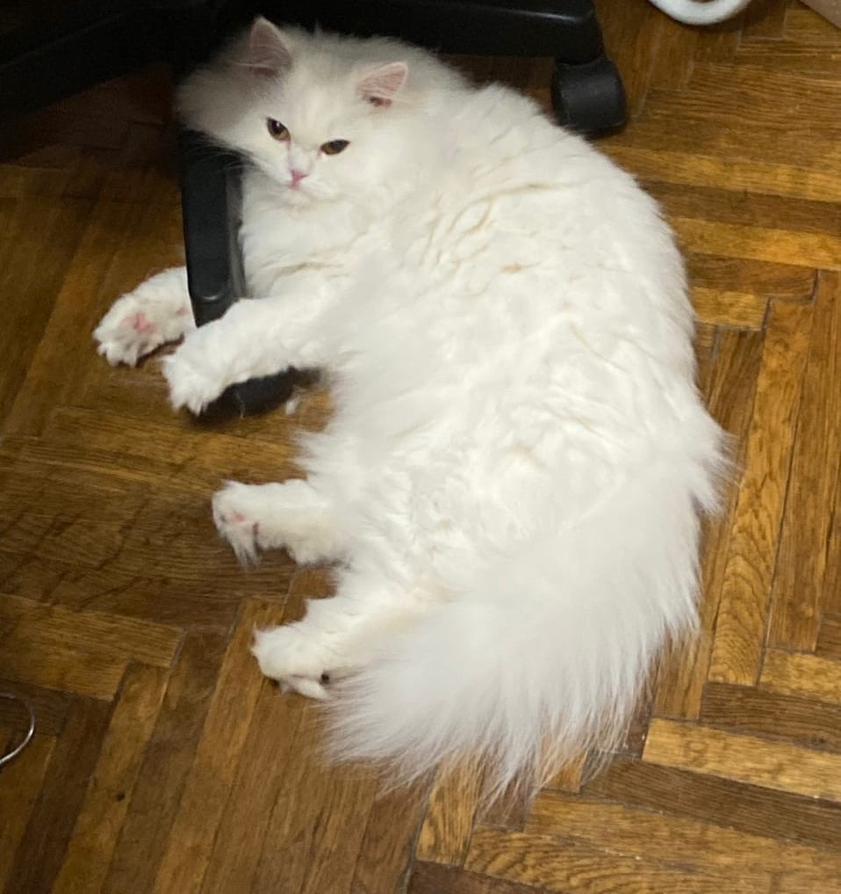

Пушок
Пушок — воплощение благородства и лени. Умеет смотреть так, будто вы — его персонал, и, честно говоря, вы им и являетесь.
Мы создаём котиков с характером. Слишком послушных у нас не бывает — только те, кто мурчит, когтит и делает, что хочет (иногда вместе с вами).
Пушок — воплощение благородства и лени. Умеет смотреть так, будто вы — его персонал, и, честно говоря, вы им и являетесь.
Молния живёт на скорости звука. Её можно лишь догонять — или смириться и аплодировать стоя, пока она гоняет тапки по квартире.

С виду ангел, на деле — генерал сна и диванных операций. Никто не умеет так грациозно игнорировать приказы, как она.
Бобби С.Собрал котика по инструкции — а он всё равно считает, что я живу у него.
Светлана П.Мой сфинкс — чистое тепло и взгляд философа. Иногда кажется, что он знает о мире больше, чем я о Wi-Fi.

Станислав В.Перс оказался характерным. Сначала пытался меня воспитывать, потом понял — поздно. Теперь мы вместе воспитываем холодильник.
Настрой уши, хвост и уровень наглости. Создай питомца, который будет мурчать, когтить и смотреть на тебя свысока — как и положено звезде семьи.
Наши котики не любят ждать — но ради вас сделают исключение. Заполните форму, и мы подберём пушистое совершенство лично под вас.